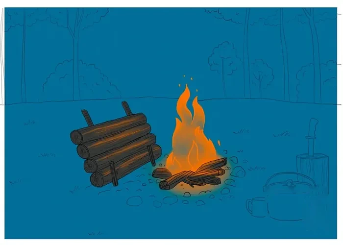

Reflector fire (fireplace lay)
A fire with "automatic" wood feed — it lets you cook and keep warm at the same time without manually feeding it. Popular with hunters and anglers for burning a long time and, if built right, for being reusable. It's usually paired with a heat reflector — an angled wall made from a tarp, a survival blanket, or branches and spruce boughs, the same way it's done for a nodya.
- Set up two parallel poles angled away from the fire — these act as the rails for the logs.
- Lay two parallel base logs on the ground and light a fire between them.
- Stack smaller-to-larger logs on top of the angled rails, forming something like the back of a chair.
- Drive stakes in on the sides so the stacked logs can't roll off.
- As the base logs burn down, the stacked logs will roll down and feed the fire automatically.
- Set the reflector up behind the fire and sleep no closer than about half a meter from it, making sure smoke doesn't build up under the shelter.
